پذيرش > مقالات > خارج از چارچوب > کمپین از نگاه دوربین/ سال اول
 گزارش تصویری گزارش تصویری

 کمپین از نگاه دوربین/ سال اول کمپین از نگاه دوربین/ سال اول
7 شهریور 1387 - تغییر برای برابری - نسخه قابل چاپ
گزارش تصویری سال اول کمپین نگاهی است به تجربه ای که با کمترین امکانات توانست برابرخواهی را به نقاط مختلف کشور گسترش دهد. عکس های این گزارش حاصل تلاش راحله عسگری زاده، آیدا سعادت،پروین اردلان، و ... دیگر دوستانی است که تلاش کرده اند لحظه لحظه این حرکت جمعی را ثبت و منتشر کنند.
5شهریور 1386: كمپين يك ميليون امضا براي تغيير قوانين تبعيض آميز آغاز به كار كرد

13 آبان: همدان هم به كمپين پيوست

14 آبان:کمپین به گرگان رسید
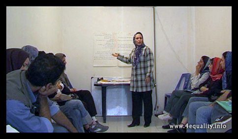
23 آبان1385: کمپین یکمیلیون امضا در کرج
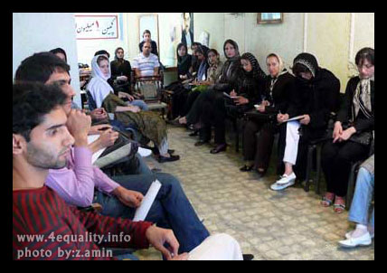
29 آبان:ارونداتی روی، به کمپین " یک میلیون امضا" پیوست
11 آذر1385: كمپين يك مليون امضا به يزد هم رسيد
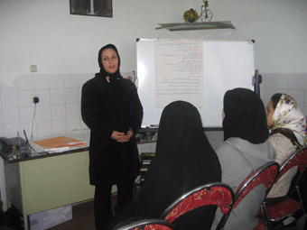
23 آذر1385 : اولين نشست سراسري دست اندركاران كمپين يك ميليون امضا

23 آذر ماه 1385: اولین بازداشت؛ جمع آوری امضا در مترو
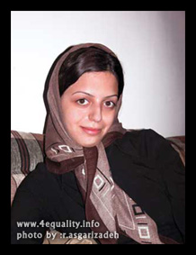
8 دی1385: کمپین یک میلیون امضا به کرمانشاه رسیدد

20 دی 1385: بازداشت نسیم سرابندی و فاطمه دهدشتی به جرم جمع آوری امضا
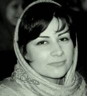

3 اسفند 1385 : كارگاه كمپين يك ميليون امضاء در مشهد

5 اسفند385:آغاز به کار کمیته مادران کمپین

10 اسفند1385: و بالاخره کارگاه رشت .....
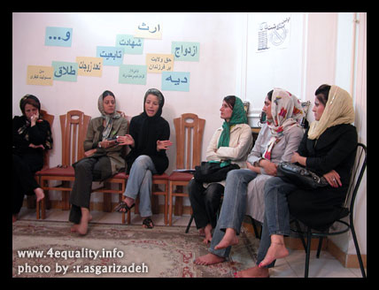
18 اسفند1385 :معرفی کمپین یک میلیون امضاء درجشن روز جهانی زن در وین

24 اسفند1385:دومین نشست عمومی کمپین

7 فروردین 1386 : عید دیدنی کمپینی ها

13 فروردین 86:بازداشت پنج تن از اعضای کمپین "یک میلیون امضا"
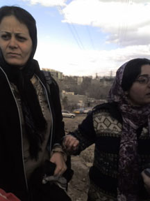
23 فروردین 1385:نشست «جنبش زنان٬ تهديدها و مقاومت ها» در دفتر تحكيم ادوار
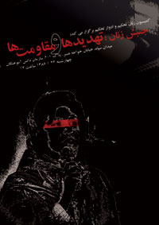
26 فروردین :آزادی محبوبه حسین زاده و ناهید کشاورز
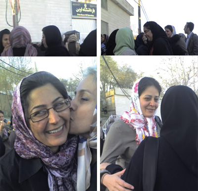
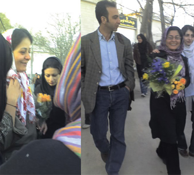
6 اردیبهشت 1386 :سومین نشست عمومی کمپین :"رابطه کمپین با احزاب و جنبش های دیگر"

20 خرداد 1386 : احترام شادفر (مادر کمپینی )و همسایه او /جمع آوری امضا
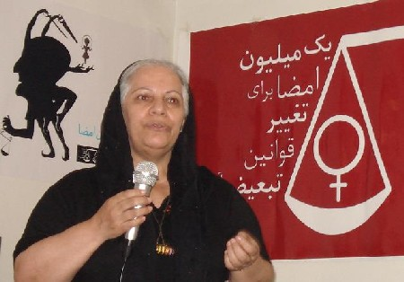
22خرداد 1386:بزرگداشت 22 خرداد از سوی اعضای کمپین

27 خرداد 1386: کمپین یک میلیون امضا در نخستین کنفرانس موسسه زنان نوبل
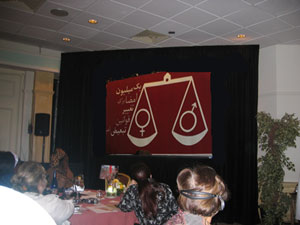
20تیر ماه1386: بازداشت امیر یعقوبعلی
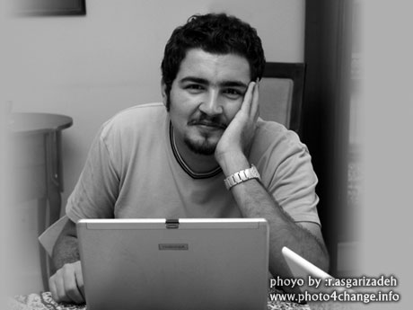
4 شهریور 1386: نمایشگاه نقاشی «همه مادران من »

6 شهریور 1386 :كنفرانس مطبوعاتي سالگرد كمپين يك ميليون امضا
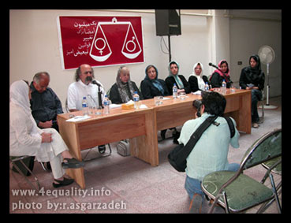

8 شهریور 1386 :نشست اعضا و حامیان کمپین در نخستین سالگرد
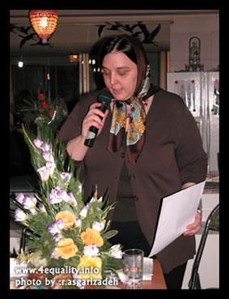
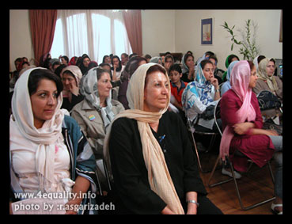
10 شهریور 1386: یک سال پر امید با کمپین: کمپین گزارش می دهد

ادامه دارد....
ارسال به
بالاترین
،
توییتر
،
فریندفید
،
فیسبوک
در همين بخش :
 8 مارس روزی که نمی توان از ما دریغ کرد 8 مارس روزی که نمی توان از ما دریغ کرد
با طلاق توافقی از حقارت و کتک و فحش رها شدم /گزارشی از دادگاه محلاتی: مریم مالک
تجمع مادران عزادار در رشت
تغییر ممکن است/ جلوه جواهری(26 روز پس از بازداشت کاوه مظفری)
گامهایی که با تزلزل نا آشنایند/ گرامی داشت چهلم ندا در رشت
ديگر بخش ها :
طرح یک میلیون امضا
|
مقالات
|
سایت نوشته ها
|
اخبار
|
گزارش كمپين
|
گفت و گو
|
علیه سکوت
|
كوچه به كوچه
|
نامه های شما
|
گزارش ویژه
|
گفتگو با اعضا
|
ویژه سالگرد کمپین
|
تصویر برابری
|
دل آرام علی
|
تریبون
|
مقالات
|
تاریخ شفاهی
|
خارج از چارچوب
|
کتابخانه
|
درباره کمپین
|
کمپین در شهرها
|
کمپین در بند
|
صدای تغییر
|
ویژه 22 خرداد
|
لایحه حمایت از خانواده
|
گالری
|
عشا مومنی
|
امیر یعقوبعلی
|
خدیجه مقدم
|
راحله عسگری زاده و نسیم خسروی
|
پروین اردلان،جلوه جواهری، مریم حسین خواه، ناهید کشاورز
|
زینب پیغمبرزاده
|
سعیده امین، سارا ایمانیان، محبوبه حسین زاده، ناهید کشاورز و همایون نامی
|
احترام شادفر
|
نسیم سرابندی زاده،فاطمه دهدشتی
|
وبلاگ مهمان
|
پرونده خرم آباد
|
دستگیری ها
|
مریم مالک
|
پرستو اللهیاری
|
مهرنوش اعتمادی
|
سمیه رشیدی
|
Other Languages
|
همراهان
|
«فراخوان کمپین ده روز با بهاره هدایت»
| English
|